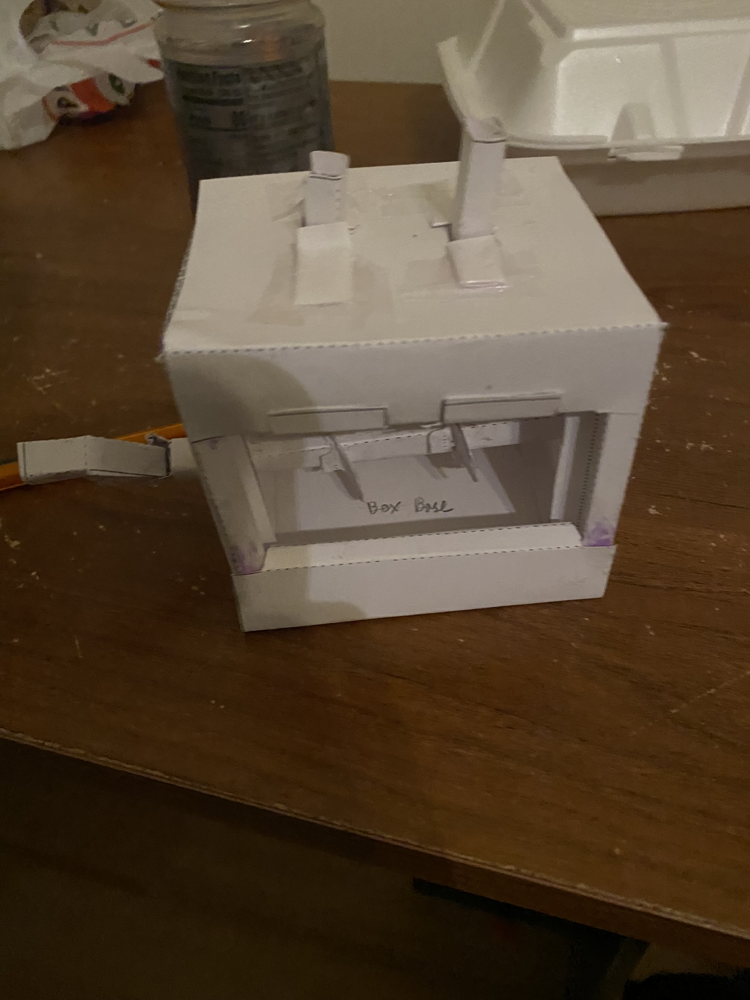

Projects · 10 complete case studies
The ideas were only the beginning
These pages show the sketches, builds, tests, mistakes, and redesigns behind my work. Some projects worked the first time. Most did not, and that is usually where I learned the most.
Use the directory for a specific project, or scroll through the full collection below.

Second Life Laptops
How could our team turn a small budget and a stack of used laptops into reliable computers for students who needed them?
Open case study
AquaTec Water Filtration
Could I improve the water from an older school fountain without creating a filter that was too expensive or difficult to maintain?
Open case study
Photoresponsive Night Light
Could I make a light that switched on automatically in the dark and fit the entire circuit inside an enclosure I designed myself?
Open case study
Arduino Control Studies
I wanted to understand how an Arduino turns a sensor reading or timing instruction into something I could actually see happen.
Open case study
Chair & Pencil Holder
Our group had to turn flat cardboard into a full-size chair that someone could actually sit in without making the assembly too complicated.
Open case study
Puzzle Block
Could I make one wooden puzzle that felt safe and approachable to a younger child but still challenged an older student?
Open case study
Reverse Engineering
I wanted to see what was happening inside familiar devices between the moment a person acts and the moment the device responds.
Open case study
CAD Creations
I wanted to get better at turning an idea on paper into a file that a 3D printer or laser cutter could actually use.
Open case study
College Decision Matrix
I needed a way to compare colleges without pretending that cost, opportunity, location, and campus life mattered equally to me.
Open case study
Double Cam Mechanism
Could I turn flat paper parts into a mechanism where one axle drove two cams and lifted two followers?
Open case study